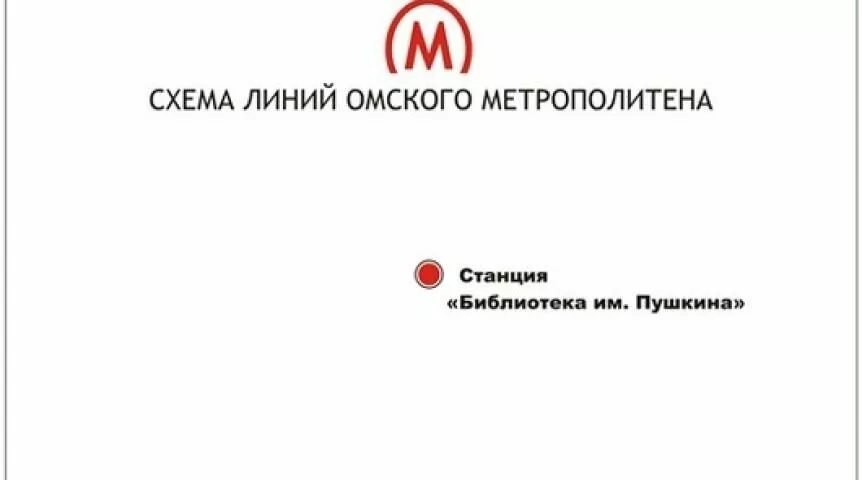

Omsk metróhálózat
Omsk metró - egy hatalmas architektúrai mestermű ami összeköti Omsk kerületeit 4 metró vonallal, 57 állomással amiből 4 megállónál lehetséges az átszállás másik járatra. Omsk polgárai büszkék a földalatti hálózatukra, bár csak az álmaikban létezik.
Az Omsk-i metróhálózat eredetileg 5 év alatt épült volna meg először 1992-től 1997-ig majd 2008, 2012, 2015 és 2016-ig. 2017-ben a legnagyobb elmék a bürökráciában felhagytak ezzel az ötlettel.
Az igazi története a metrónak 2008-ban kezdődik, mikor a legokosabb mérnökök és munkások befejezték az első és eddig egyedülálló és valóságban létező állomást ami a "Библиотека имени Пушкина" nevet kapta. Ami rá nem sok idővel össze is omlott és majdnem megölt munkásokat. Majd 2010-ben az omski rászánt pénz elfogyott és így megkérték a kormányt hogy segítsenek, akik adtak is 1 billió rubelt.
2012-ben a miniszterelnők megígérte az omski lakóknak hogy a metró 2016-ra kész lesz, de nem tudta eldönteni hogy ki fizessen érte, a közlekedési miniszter vagy a gazdasági.
2013-ban a kormány adott 1.5 billó rubelt hogy folytassák a földalatti vonalak kiépítését.
2014-ben a metró épülete 24 billió rubelre volt értékelve így Omsk polgármestere eldöntötte hogy csinál egy keveréket a földalatti járatok és a villamosok között. Amit nem tett meg.
Ezután 2014-2018 között pár plusz billió rubel volt elköltve az omski metró építésére és végre leállították az építkezéseket 2018-ban az egyedüli Библиотека имени Пушкина állomással.
